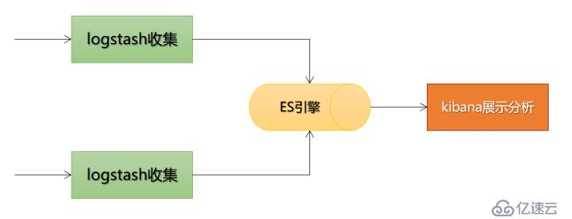

摘要：ELK 是指
Elasticsearch + Kibana + Logstash这三种服务搭建的日志处理系统。
[TOC]
其中log4j和commons-logging都是apache软件基金会的开源项目。
Java中给项目程序添加log主要有三种方式：
java.util.logging包：JDK标准库中的类，是JDK 1.4 版本之后添加的日志记录的功能包。log4j：最强大的记录日志的方式。可以通过配置 .properties 或是 .xml 的文件， 配置日志的目的地，格式等。commons-logging：，最综合和常见的日志记录方式，是Java中的一个日志接口，一般会与log4j一起使用。自带SimpleLog可用于日志记录。应用中不可直接用日志系统中的 API，而应使用门面模式的日志框架，（解耦）有利于维护各个类的日志处理方式统一。
MyBatis 通过内置的日志工厂提供日志功能。
日志系统：JUL、Log4j、Log4j2、Logback 等。
日志门面（框架）：
Spring Boot：默认用 SLF4J 日志门面 + Logback 日志系统实现的组合来搭建日志系统，可通过配置整合 ELK；Spring：Apache Commons Logging，原名 JCL（Jakarta Commons Logging）；应用部署在一个类路径已包含 ACL 的环境中（如 Tomcat 和 WebShpere 应用服务器），MyBatis 会把它作为日志工具，而不是自定义的其它日志工具，需显式地在 MyBatis 配置文件（mybatis-config.xml）里用 <setting name="logImpl" value="LOG4J"/> 配置。Hibernate：jboss-logging。ELK 是指 Elasticsearch + Kibana + Logstash 这三种服务搭建的日志处理系统。
Logstash：用于收集日志。SpringBoot 应用整合了 Logstash 以后、会把日志发送给Logstash，再把日志转发给Elasticsearch；
logback-spring.xml 的 <property> <appender> <logger> 标签，从定义的输入源 inputs（stdin、日志文件、数据库等）读取信息，经过 filters 过滤器处理，输入到定义好的 outputs 输出源（stdout、elesticsearch、HDFS等）。springboot 集成 LogStash 的步骤Elasticsearch：用于存储收集到的日志信息；以及生成索引数据，便于Kibana做检索。Kibana：通过 Web 端（的可视化）界面来展示分析、查询检索日志。

安装 elasticsearch ik 中文分词：https://release.infinilabs.com/analysis-ik/stable/ 下载解压。
JAVA_HOME D:\Develop\Java\jdk\jdk1.8.0_311;D:\Develop\Java\jdk\jdk-17
# not use
cd elasticsearch-6.2.2/bin/
elasticsearch-plugin install https://get.infini.cloud/elasticsearch/analysis-ik/6.2.2
//elasticsearch-6.2.2\plugins\analysis-ik
需要对Logstash配置单独的Java环境，只需要分别在如下两个配置文件里面配置Java环境即可：
~/logstash-5.2.0/bin/logstash
~/logstash-5.2.0/bin/logstash.lib.sh
#在行首添加
export JAVA_HOME="D:\Develop\Java\jdk\jdk1.8.0_311"
export PATH="$PATH:$JAVA_HOME\bin"
logstash 启动：
cd D:\Develop\Env\logstash-6.2.2\bin
./logstash -f logstash.conf &
@CommonsLog、@Flogger、@Log、@JBossLog、@Log4j、@Log4j2、@Slf4j、@Slf4jX 注解，添加在类上，自动为类添加对应的日志支持。
@Log、@Log4j、@Slf4j：根据不同的注解生成不同类型的 log 静态常量对象，但实例名称都是 log，有六种可选实现类：// Creates 即 创建的类型，如 private static final java.util.logging.Logger
@Log
Creates log = java.util.logging.Logger.getLogger(LogExample.class.getName());
@CommonsLog
Creates log = org.apache.commons.logging.LogFactory.getLog(LogExample.class);
@Log4j
Creates log = org.apache.log4j.Logger.getLogger(LogExample.class);
@Log4j2
Creates log = org.apache.logging.log4j.LogManager.getLogger(LogExample.class);
// Spring Boot 默认，最常用
@Slf4j
Creates log = org.slf4j.LoggerFactory.getLogger(LogExample.class);
@XSlf4j
Creates log = org.slf4j.ext.XLoggerFactory.getXLogger(LogExample.class);
@Slf4j注解：添加在类上，给该类创建 Slf4j Logger 静态属性。Spring Boot 使用 Slf4j 日志门面框架，所以绝大多数情况下，都是使用 @Slf4j 注解。
Simple Logging Facade for Java 的缩写，意为Java 的简单日志门面log 的静态常量日志对象。@Slf4j //加在类上
public class GlobalExceptionHandler {
// 等价于
private static final org.slf4j.Logger log = org.slf4j.LoggerFactory.getLogger(GlobalExceptionHandler.class)
// 可以直接在类中调用
log.warn("[serviceExceptionHandler]\n\t{}", stackTrace);
}
logging 部分配置
# application-dev.yml
logging:
level:
root: info # 设置应用的日志打印级别
com.macro.mall: debug
logstash:
host: localhost
---
# application-prod.yml
logging:
file:
path: /var/logs
level:
root: info
com.macro.mall: info
logstash:
host: logstash
---
# application.property格式
# 设置应用的日志打印级别
logging.level.com.glmapper.spring.boot=INFO
# 输出位置
logging.path=./logs
logback.xml 配置文件文件位置：src/mian/resource/logback-spring.xml
想用 Spring 扩展 profile 支持，要以 logback-spring.xml 命名，其他如 property 需改为springProperty。
文件中主要标签有：
<configuration>
<include>：导入其他项目配置的 logback.xml 文件，Configure Logback for Logging console-appender.xml
<!—引用默认日志配置—>
<include resource=”org/springframework/boot/logging/logback/defaults.xml“/>
<!—使用默认的控制台日志输出实现—>
<include resource=”org/springframework/boot/logging/logback/console-appender.xml“/>
<property name="" value="">：用来定义变量，可用${name}变量占位符将值插入到logger上下文中。
<springProperty name="" scope="" source="" defaultValue="">：
<appender name="" class="">：日志打印组件。让应用知道怎么打、打印到哪里、打印成什么样。通过logger或root的appender-ref指定某个具体的appender；
<filter>：作为过滤器；可用任意条件对日志进行过滤。<logger name="org.mybatis.example.BlogMapper">：用来设置某个包、或具体某个类的日志打印级别、及指定appender。告诉应用哪些按照哪个appender 打印。
<root level="">：根 logger，设置日志打印级别。也是一种 logger，且只有一个level属性。
日志 LEVEL 分类：DEBUG、INFO、WARN、ERROR。
logback 日志输出位置：
通过控制台打印日志
LogStashprivate static final Logger LOGGER = LoggerFactory.getLogger(HelloController.class);
@Autowired
private TestLogService testLogService;
//一、通过控制台打印日志
@GetMapping("/hello")
public String hello(){
LOGGER.info("this is info");
LOGGER.error("this is error");
testLogService.printLogToSpecialPackage();
return "hello spring boot";
}
结合项目说下，怎么用 AOP 输出日志。
WebLogAspect 统一日志处理切面类，并加 @Aspect、@Component 注解；@Pointcut("execution(public * com.*.controller.*.*(..))) 切点注解，通过切点表达式、指定日志切面的应用范围是所有 Controller 层的接口方法；@Around、@Before、@AfterReturning、@AfterThrowing 指定通知何时执行。如，日志切面需在接口调用前后分别记录当前时间，取差值计算调用时长。package com.macro.mall.common.log;
/**
* 统一日志处理切面
*/
@Aspect
@Component
@Order(1)
public class WebLogAspect {
private static final Logger LOGGER = LoggerFactory.getLogger(WebLogAspect.class);
@Pointcut("execution(public * com.macro.mall.controller.*.*(..))||execution(public * com.macro.mall.*.controller.*.*(..))")
public void webLog() {
}
@Before("webLog()")
public void doBefore(JoinPoint joinPoint) throws Throwable {
}
@AfterReturning(value = "webLog()", returning = "ret")
public void doAfterReturning(Object ret) throws Throwable {
}
@Around("webLog()")
public Object doAround(ProceedingJoinPoint joinPoint) throws Throwable {
long startTime = System.currentTimeMillis();
...
}
}